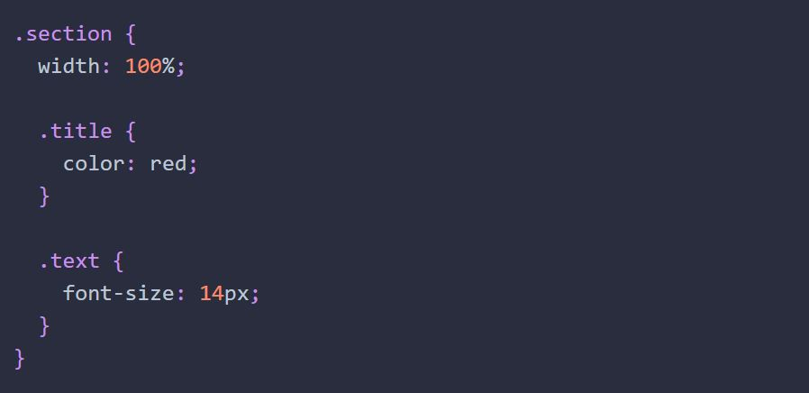
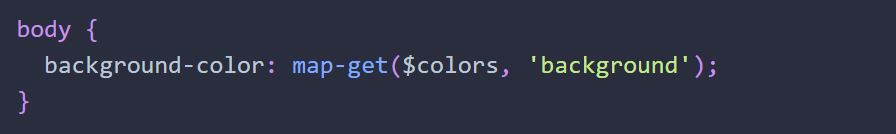

Современный процесс разработки сильно отличается от того, каким он был на заре веб-индустрии. Кроме свободного владения всеми базовыми технологиями (HTML, CSS и JavaScript), необходимо уметь использовать целую мириаду вспомогательных инструментов.
Один из таких инструментов это CSS-препроцессор - надстройка расширяющая CSS-синтаксис, облегчающая написание, поддержку и рефакторинг кода. Препроцессоры позволяют использовать функции, которые еще не существуют в CSS, такие как переменные (уже сущестуют), вложения, миксины, наследование и другие вкусности, которые ускоряют и упрощают написание CSS.
Самые популярные препроцессоры это: SASS, LESS и Stylus. Все они похожи и решают одну задачу, поэтому достаточно выбрать и использовать один. Самый популярный препроцессор - SASS и его синтаксис SCSS.
ПРЕИМУЩЕСТВАСегодня используется синтаксис SCSS (Sassy CSS), который является расширением оригинального CSS-синтаксиса . Это значит, что любое допустимое значение в CSS-стилях будет допустимо и в SCSS. Файлы с этим синтаксисом имеют расширение .scss, например main.scss.
Браузер не понимает синтаксиса специальных конструкций SASS, поэтому код препроцессора необходимо преобразовать (скомпилировать) в CSS. Способов компиляции довольно много: различные консольные утилиты, сборщики и плагины редактора.
Процесс разработки сводится к следующим шагам:Рассмотрим самые полезные синтаксические возможности SASS, освоить которые для дальнейшего применения можно за несколько часов.
Переменные и операции над ними это одна из самых простых, и в то же время мощных особенностей препроцессоров. Синтаксис объявления переменной - знак $ перед именем и её значение после двоеточия.
Будет скомпилирован в следующий CSS.
Имена переменных должны быть описательные, чтобы из имени было понятно что там хранится. Переменная $color-blue имеет немного смысла (кроме того, что она указывает на синий цвет), а вот $color-accent, $color-primary или $color-background показывает роль этого цвета. Семантические, описательные имена переменных не требуют переименования, например при изменении палитры брендовых цветов компании.
Имена переменных могут быть записаны в kebab-case, snake_case или camelCase нотациях. Главное, чтобы в проекте использовался только один из этих стилей, для однородности кода.
Переменные доступны только в пределах того уровня вложенности селекторов, на котором они определены. То есть, если переменная объявлена в селекторе, она доступна только в нём. Переменная объявляемая вне каких-либо селекторов, доступна глобально.
В случае когда в имени переменной сделана ошибка или такой переменной нет в доступной области видимости, будет ошибка компиляции стилей.
Подобно вложености тэгов в HTML, в SASS можно вкладывать одно правило в другое. Это одна из наиболее полезных, а также неправильно используемых возможностей.
Вложенность позволяет иметь одни объявления правил внутри других. В обычном CSS мы могли бы написать следующий код для стилизации секции и её заголовка и абзаца.
В SASS можем получить тот же результат, написав следующий код.
В SASS можем получить тот же результат, написав следующий код.
Запишем имена классов из предыдущего примера по принципу родитель-потомок.
Тогда используя оператор конкатенации в SASS можем получить тот же результат.
Тогда используя оператор конкатенации в SASS можем получить тот же результат.
Используя вложенность селекторов и оператор конкатенации можем записть аналог в SASS.
А что делать если :hover и :focus в CSS сгруппированы?
Ничего не меняется, без проблем группируем и в SASS, не забывая поставить & там, где необходимо пришить родительский селектор.
Вложенность селекторов это отличный способ сэкономить время и упростить поддержку, но чрезмерная вложенность гарантированно вызовет проблемы с читабельностью кода.
Представим следующую разметку кнопки с иконкой и текстом.
Запишем какие-то стили и сделаем их специально чуть-чуть сложнее чем нужно.
Теперь запишем аналог в SASS используя вложенность и конкатенацию.
Прочитать такую запись быстро довольно сложно, визуально теряется связь с родитеским селектором и вместо того чтобы разбирать CSS-код, приходится вчитываться в синтаксис вложенностей. То есть используя возможности препроцессора мы сделали хуже - больше не всегда лучше.
Создавайте новое правило для каждого элемента, а вложенности и конкатенации используйте для оформления состояний.
До того как в CSS появилась функция calc(), препроцессоры были единственным решением если было необходимо выполнить математические вычисления. Операции над числами поддерживают стандартные операции: +, -, *, / и % (остаток от деления по модулю).
В отличии от фуцнкции calc(), в препроцессоре нельзя смешивать типы единиц. При попытке скомпилировать код из следующего примера - будет ошибка.
Дело в том, что препроцессор не знает сколько будет 100% или 5rem в пикселях заранее. Значения относительных единиц в пикселях можно узнать только в момент рендера HTML-страницы. Поэтому для таких вычислений необходимо использовать нативную функцию calc().
Директива @extend используется для наследования уже существующих стилей. Используем её чтобы создать компонент кнопки с несколькими состояниями.
Расширение (наследование) не сделает копию стилей для каждого селектора, а грамотно добавит нужные селекторы в перечисление к правилу с наследуемыми стилями. Вот как это будет выглядеть после компиляции.
Но что, если мы хотим расширить набор стилей, базовый селектор для которого не нужен? Например если не нужен селектор .button из предыдущего примера, ведь сам по себе он ничего не делает и в HTML использован не будет.
Для таких случаев существует placeholder (плейсхолдер, местозаполнитель, шаблон) - произвольное имя селектора с обязательным символом % в начале, например %button.
После компиляции будут доступны селекторы .button-success и .button-error привязанные к правилу шаблона, а самого имени шаблона в CSS не будет.
Директива @mixin, как и плейсхолдеры, позволяет создавать готовые наборы свойств, но с различными значениями, в зависимости от полученных аргументов при вызове миксина.
Миксин объявляется с помощью директивы @mixin и его имени. Далее могут идти необязательные параметры в круглых скобках (сами скобки обязательны), а в фигурных - набор свойств и значений.
Создадим миксин для задания только верхней и нижней рамки элемента, и сделаем цвет рамки настраиваемым значением.
Добавить стили миксина к селектору можно при помощи директивы @include, после которой вызываем миксин и передаём значения для настраиваемых свойств.
После компиляции будут только правила для селекторов .section и .header с добавленным кодом из миксина, кода объявления самого миксина не будет.
Миксин отличается от плейсхолдера тем, что свойства дублируются в каждый селектор. Всё потому, что значения свойств миксина могут быть разные, в зависимости от переданных аргументов при вызове @include миксин(аргументы). В то время как свойства и их значения в плейсхолдере всегда одинаковые.
Объявим несколько переменных для хранения палитры цветов проекта. Они слабо связаны, по сути это просто набор переменных с префиксом color для указания того, что они хранят цвет.
Карта (словарь) позволяет хранить набор связанной информации в формате термин: определение. Например, вместо нескольких несвязанных переменных хранящих палитру проекта, можно записать карту (словарь) цветов. Карта состоит из имени переменной, в которой она хранится, и набора свойств в формате ключ: значение разделенных запятыми, внутри пары круглых скобок.
Имя цвета может быть произвольное, это просто название свойства. Такая карта позволит упорядоченно и многократно получать доступ к цветам. Для того чтобы получить значение свойства используется встроенная SASS-функция map-get().
Первым аргументом передаём имя переменной в которой находится словарь, вторым имя свойства значение которого необходимо получить. Имя свойства должно быть строкой, то есть обёрнуто в одинарные или двойные кавычки.
Постоянно писать map-get() и передавать имя карты неудобно. Напишем свою функцию-утилиту для более простого доступа к свойствам карты цветов. Эту функцию объявляем в том-же файле где и карта.
После импорта файла _colors.scss можно использовать функцию getColor(имя_свойства).
Вендорные префиксы - это специальные приставки, используемые производителями (вендорами) браузеров для экспериментальных, еще не принятых в стандарт, или не полностью реализованных в браузере CSS-свойств и значений.
Список вендорных префиксов по браузерам:
Вручную прописывать их не нужно, для этого используются специальные инструменты которые автоматизируют процесс, например SASS-комилятор с дополнительными настройками. Для ознакомления можно использовать интерактивную площадку https://autoprefixer.github.io/.
Например, следующий CSS-код будет работать в большинстве последних версий современных браузеров.
После обработки автопрефиксером получаем следующий код, который будет гарантированно работать в последних 4-х версиях всех современных браузеров. Нужное количество версий выбирается в интерфейсе автопрефиксера.

Браузеры которые поддерживают нативные свойства и значения проигнорируют их аналоги с верндорными префиксами, и наоборот.